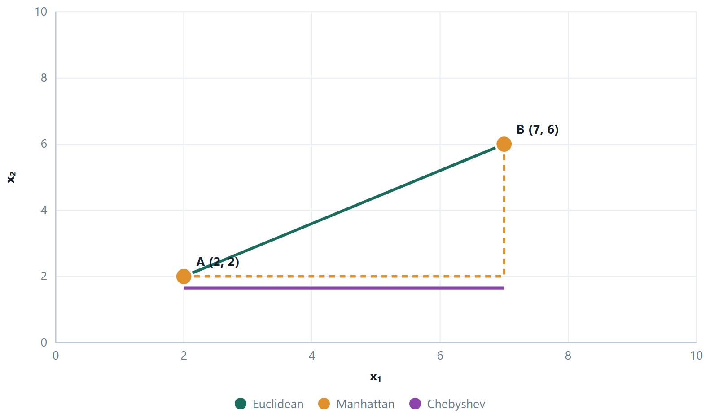
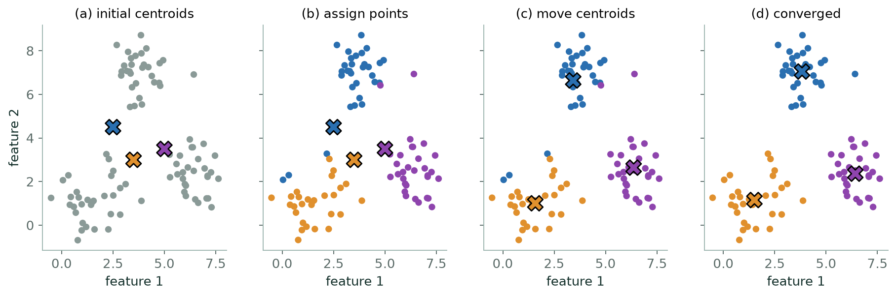
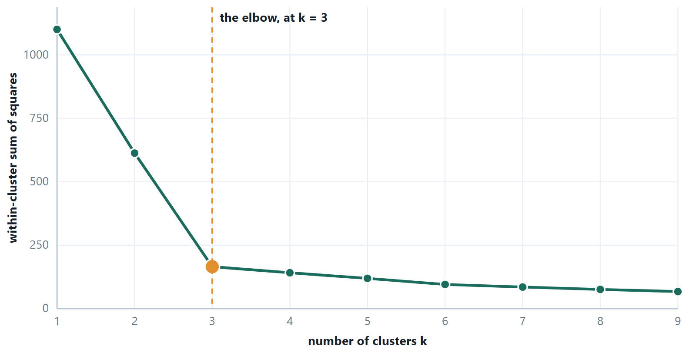
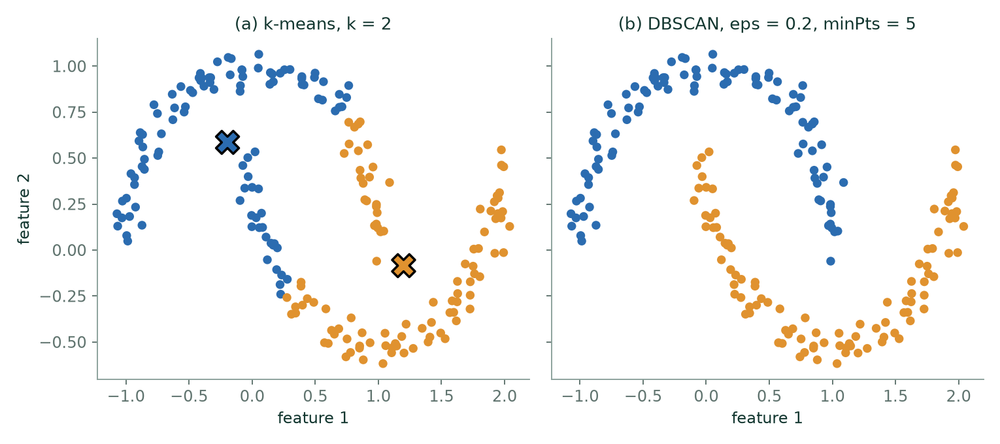

Chapter 13: Clustering and K-means¶
Hand somebody a pile of a thousand photographs of animals with no captions and ask them to sort it into groups. They will do it, and they will not need to be told what the groups are — but the groups they produce depend entirely on what they decided “similar” meant. Sort by species and you get one arrangement. Sort by colour, or by whether the photograph was taken indoors, and you get others. None of them is wrong.
That is clustering, and it is why this unit feels different from everything before it. In Units 3 and 4 there was a right answer and the only question was how close you got. Here you supply the definition of similarity — the distance metric, the scaling, the number of clusters — and the algorithm then finds the best arrangement under your definition. The output is a hypothesis about the data, to be judged by whether it is useful, not by whether it is correct.
Which means the choices you make before running anything — what to standardise, which distance, how many clusters — are not preliminaries. They are the model.
Learning outcomes of Unit 5
- Explain what clustering is trying to achieve — high similarity within clusters, low similarity between them — and place any method in the partitional / hierarchical / density and hard / soft schemes.
- Compute Euclidean, Manhattan, Chebyshev, Minkowski and cosine measures, and choose between them from the shape of the data.
- Run k-means by hand, prove to yourself that it must terminate, and name each of its five failure modes with its remedy.
- Choose \(k\) with the elbow method and the silhouette coefficient, and say why WCSS alone can never do it.
- Build an agglomerative clustering under single, complete and average linkage, read a dendrogram, and cut it to get a clustering.
- Evaluate a clustering with internal and external measures, and explain why evaluation here is genuinely harder than in Units 3 and 4.
13.1 What a cluster is, and the families of methods¶
Definition: The clustering objective
Partition the data so that intra-cluster similarity is high — points in the same cluster are close together — and inter-cluster similarity is low — points in different clusters are far apart. Every algorithm below is a different way of making that trade concrete.
| Partitional | Hierarchical | Density-based |
|---|---|---|
| One flat split into \(k\) groups | A nested tree of clusterings | Clusters are dense regions separated by sparse ones |
| \(k\) must be given in advance | \(k\) is chosen afterwards, by cutting the tree | \(k\) is never given; the algorithm decides |
| k-means, k-medoids | Agglomerative (bottom-up) or divisive (top-down) | DBSCAN, OPTICS |
| Fast: roughly \(O(\text{mkni})\) per run | Slow: \(O(m^{3})\) naïvely, \(O(m^{2}\) log \(m\)) with care | Finds arbitrary shapes — crescents, rings, spirals |
| Finds convex, similar-sized blobs | Shape depends entirely on the linkage | Labels sparse points as noise, which the others cannot |
| Restarting can give a different answer | Deterministic — the same data gives the same tree | Needs two parameters: \(\varepsilon\) and minPts |
There is a second, independent axis. Hard clustering assigns each point to exactly one cluster. Soft or fuzzy clustering gives each point a degree of membership in every cluster. Gaussian mixture models are the standard example, and they are the natural choice when the groups genuinely overlap.
13.2 Distance and similarity¶
“Similar” has to become arithmetic before an algorithm can use it. Every measure below is a different answer to the same question, and the answer changes the clustering.
Definition: The Minkowski family
\(d_{p}(a, b) =\) ( \(\sum |a_{i} - b_{i}|^{p} )^{1/p}\)
\(p = 1\) is Manhattan (city-block), \(p = 2\) is Euclidean, and \(p \to \infty\) gives Chebyshev, the largest single coordinate difference.

Always \(d_{\infty } \le d_{2} \le d_{1}\) — a useful check on any hand calculation.
| Measure | Use it for | Because |
|---|---|---|
| Euclidean | the default; k-means is built on it | ordinary geometry, and the mean minimises it |
| Manhattan | grid-like movement; robustness to one wild coordinate | no squaring, so one large difference does not dominate |
| Cosine | text, and any high-dimensional sparse count data | measures direction, not magnitude — a long and a short document about the same topic count as similar |
| Jaccard | sets: baskets, tags, binary presence | \(\|A\cap B\|/\|A\cup B\|\) — shared items over total items |
| Hamming | strings and categorical vectors | counts positions that differ |
| Mahalanobis | correlated features with different spreads | divides by the covariance, so it measures distance in standard deviations |
Scale first, always
Squared distance sums over features, so a feature measured in rupees swamps one measured in years and the clustering is effectively on income alone. Standardising is not a refinement here — without it you are not clustering the data you think you are clustering. The one exception is when every feature is already in the same unit and the differences in spread are themselves meaningful.
13.3 K-means¶
Definition: Lloyd's algorithm
- Choose \(k\) initial centroids.
- Assign: attach every point to its nearest centroid.
- Update: move each centroid to the mean of the points attached to it.
- Repeat 2–3 until no assignment changes.
It minimises the within-cluster sum of squares: \(\text{WCSS} = \sum _{j} \sum _{x \in C_{j}} \Vert x - \mu _{j}\Vert ^{2}\).

Why it always terminates
Both half-steps can only lower WCSS. Assignment moves each point to a nearer centroid or leaves it. Update moves each centroid to the mean — and the mean is exactly the point that minimises the sum of squared distances to a set, which is why k-means uses the mean rather than, say, the median. So WCSS never increases; and since there are only finitely many ways to partition \(m\) points into \(k\) groups, a quantity that never increases must eventually stop changing. Convergence is guaranteed. Convergence to the best partition is not.
| Failure | What you see | Remedy |
|---|---|---|
| Local optimum | different clusters each run | many restarts, keep the lowest WCSS; k-means++ initialisation |
| \(k\) must be guessed | no principled default | elbow, silhouette, or domain knowledge |
| Non-convex shapes | crescents and rings sliced in half | DBSCAN, spectral clustering, single-linkage hierarchical |
| Unequal sizes or densities | a big loose cluster is split; small tight ones merged | Gaussian mixtures, or accept it |
| Outliers | a cluster containing one point | remove outliers first, or use k-medoids, whose centres are real data points |
| Unscaled features | the clustering follows one feature | standardise before clustering |
k-means++ deserves a sentence of its own, because it is what every library now does by default. Rather than choosing the initial centroids uniformly at random, it picks the first at random and then chooses each subsequent one with probability proportional to its squared distance from the nearest centroid already chosen. The centroids therefore start spread out, which both reduces the chance of a poor local optimum and typically halves the number of iterations needed.
Example 13.1: Why the centroid is the mean, and why k-means must stop
Problem. The update step moves each centroid to the mean of its members. Why the mean and not, say, the median — and why does that choice guarantee the algorithm terminates?
Step 1 — what the update step is really solving
Hold the assignment fixed. For one cluster \(C\) with members \(x\), the contribution to the objective is
\(f(c) = \sum _{x \in C} \Vert x - c\Vert ^{2}\)
and we are free to choose \(c\). It is a smooth function of \(c\) and a sum of squares, so it has a minimum where its gradient vanishes.
Step 2 — differentiate
\(\nabla _{c} \Vert x - c\Vert ^{2} =\) −2(x \(- c\)), so
\(\nabla f(c) = -2 \sum _{x \in C} (x - c) = 0\)
Split the sum, using \(\sum c =\) |C|·c:
\(c = (1/|C|) \sum _{x \in C}\) x — the mean, and nothing else. It is a minimum because the second derivative is \(2|C| > 0\).
Step 3 — why this makes the algorithm stop
Write \(W\) for the within-cluster sum of squares. Each half-step can only lower it.
Assignment. Every point moves to a centroid at least as close as its current one, so no term of \(W\) increases.
Update. By step 2 the mean is the minimiser of that cluster's term, so replacing the old centroid by the mean cannot increase it either.
Step 4 — finish the argument
\(W\) never increases, and there are only finitely many ways to partition \(m\) points into \(k\) groups — at most \(k^{m}\). A sequence that never increases and can take only finitely many values must eventually stop changing. Hence k-means always converges, in finitely many iterations.
Answer. \(c =\) the mean of the cluster; \(W\) is non-increasing at every half-step over finitely many partitions, so the algorithm terminates
Comment. Notice what the proof does not say: nothing here promises that the partition it stops at is the best one. It promises a local optimum, reached from wherever the centroids started — which is exactly why you restart k-means and keep the run with the lowest \(W\). Change the objective to \(\sum \Vert x - c\Vert\) (absolute, not squared) and step 2 returns the median instead: that is k-medians, and it resists outliers for the same reason MAE does.
# k-means, the elbow and the silhouette in one pass
from sklearn.cluster import KMeans
from sklearn.metrics import silhouette_score
from sklearn.preprocessing import StandardScaler
Xs = StandardScaler().fit_transform(X) # never skip this before a distance
for k in range(2, 9):
km = KMeans(n_clusters=k, n_init=10, random_state=42).fit(Xs)
print(k, round(km.inertia_, 1), # inertia IS the WCSS
round(silhouette_score(Xs, km.labels_), 3))
km = KMeans(n_clusters=3, n_init=10, random_state=42).fit(Xs)
print(km.cluster_centers_) # in scaled units — inverse_transform to read them
print(km.n_iter_) # how many assign/update rounds it took
n_init=10 is the restart defence from the failure table: ten runs from different k-means++ starts, keeping the lowest inertia. Set it to 1 and the result becomes a lottery.
And the same algorithm written out — the two half-steps are two lines.
# Lloyd's algorithm from scratch
import numpy as np
def kmeans(X, k, iters=100, seed=0):
rng = np.random.default_rng(seed)
C = X[rng.choice(len(X), k, replace=False)] # initial centroids
for _ in range(iters):
d = ((X[:, None, :] - C[None, :, :]) ** 2).sum(-1) # squared distances (m, k)
labels = d.argmin(axis=1) # ASSIGN — no square roots needed
newC = np.array([X[labels == j].mean(axis=0) # UPDATE — the mean, from the proof
if (labels == j).any() else C[j]
for j in range(k)])
if np.allclose(newC, C): break # nothing moved: converged
C = newC
wcss = d[np.arange(len(X)), labels].sum()
return C, labels, wcss
13.4 Choosing the number of clusters¶

Definition: The silhouette coefficient
For a point, let a be its mean distance to the other members of its own cluster and \(b\) its mean distance to the members of the nearest other cluster. Then
\(s = (b - a) / \max(a\), b)
\(s\) near +1: comfortably inside its cluster. \(s\) near 0: on a border. \(s\) negative: closer to another cluster than its own — probably misassigned. The average \(s\) over all points scores the whole clustering.
Unlike WCSS, the average silhouette has a genuine maximum over \(k\), so it can be optimised directly rather than eyeballed. It also gives per-point diagnostics: a cluster whose points mostly have low silhouettes is one you should look at again.
Other ways to fix \(k\), in rough order of how often they are right
Domain knowledge — the marketing team wants four segments because they have four campaigns, and no statistic overrules that. The elbow. The silhouette. The gap statistic, which compares your WCSS against what uniformly random data of the same extent would give. Or hierarchical clustering, which produces every \(k\) at once and lets you decide by looking.
13.5 Further topics¶
k-means++ initialisation in detail¶
The random start is the weak point of Lloyd's algorithm, since two initial centroids can fall inside one natural group and leave another group with none. k-means++ repairs this by choosing the starting centroids one at a time, in proportion to how badly each point is currently served.
- Choose the first centroid uniformly at random from the data.
- For every point \(x\) let \(D(x)\) be the distance to the nearest centroid chosen so far.
- Choose the next centroid from the data points, with \(P(x) = D(x)^{2} \Big/ \sum_{x'} D(x')^{2}\).
- Repeat steps 2 and 3 until \(k\) centroids are chosen, then run Lloyd's algorithm as usual.
A point already at a centroid has \(D = 0\) and so can never be chosen again, and a point far from every centroid has a large share of the probability. Squaring makes the preference sharp: a point twice as far away is four times as likely to be picked. The seeding is still random, so it does not remove the need for restarts, but it is a far better random start. Its expected WCSS is provably within a factor that grows only logarithmically with \(k\) of the best possible, and in practice it also saves iterations because the centroids begin near where they will end.
Convergence criteria and cost¶
"Repeat until nothing changes" is the mathematical stopping rule, and implementations add two practical ones: stop when the centroids move by less than a small tolerance, and stop after a fixed maximum number of iterations. Both exist for the same reason, that on large data the last few iterations move a handful of borderline points and improve the WCSS by almost nothing.
The cost of one iteration is \(O(mkn)\) for \(m\) points, \(k\) centroids and \(n\) features, since every point is compared with every centroid, so a run of \(i\) iterations costs \(O(mkni)\). This is linear in the number of points, which is why k-means is the method that scales to millions of rows. It is also coordinate descent: the algorithm alternates between improving the assignments with the centroids fixed and improving the centroids with the assignments fixed, as gradient descent improved one parameter at a time in Unit 3, and like it can only promise a local minimum.
Soft clustering and mixture models¶
In hard clustering every point belongs to exactly one cluster. A soft clustering gives each point a membership in every cluster, and the memberships of a point add up to 1. A point lying between two groups is then described as, say, 82% in one and 18% in the other, which is more honest than forcing a choice.
The standard soft method is the Gaussian mixture model. Each cluster is a normal distribution with its own mean, and the membership of a point, called its responsibility, is the probability that the point came from that component. With two components of equal spread \(\sigma\) and equal weight, centred at \(\mu_{1}\) and \(\mu_{2}\), the responsibility of the first is
which is a logistic curve in the difference of the two squared distances. With \(\mu_{1} = 2\), \(\mu_{2} = 8\) and \(\sigma = 2\):
| \(x\) | 2 | 3 | 4 | 5 | 6 | 7 | 8 |
|---|---|---|---|---|---|---|---|
| \(r_{1}(x)\) | 0.989 | 0.953 | 0.818 | 0.500 | 0.182 | 0.047 | 0.011 |
The point \(x = 5\), midway between the centres, is exactly 50% in each; the point \(x = 4\) is 82% in the first. The fitting procedure is the EM algorithm, and it has the same two-half-step shape as k-means. The E-step computes the responsibilities with the current parameters; the M-step recomputes each mean (and spread and weight) as a responsibility-weighted average of the data. K-means is the hard limit of this procedure: shrink \(\sigma\) towards zero and the logistic curve becomes a step, so every responsibility is 0 or 1 and the weighted mean becomes the ordinary mean of the points assigned. Mixtures also allow elliptical clusters of different sizes, which is how they escape the equal-size, round-cluster assumption of k-means. Fuzzy c-means is another soft method, with memberships defined by distance rather than by a probability model.
k-medoids¶
K-means needs a mean, and a mean exists only for numeric features and is dragged by outliers. k-medoids keeps the same assign-and-update structure but restricts each cluster centre to be one of the data points, the medoid: the member with the smallest total dissimilarity to the others in its cluster. The classical algorithm (PAM, partitioning around medoids) picks \(k\) medoids, assigns each point to its nearest, and then tries swapping each medoid with a non-medoid, keeping a swap whenever it lowers the total dissimilarity. For the cluster \(\{1, 2, 3, 4, 100\}\) the mean is \(22\), which is not close to anything, while the medoid is \(3\) (total distance \(101\), against \(102\) for \(2\) and \(4\)). Because only pairwise dissimilarities are used, k-medoids works with any distance, including those for categorical data, and it is the robust choice when outliers cannot be removed. The price is speed: the swap search is much more expensive than computing means, so it is used on modest data sizes.
Density-based clustering and DBSCAN¶
K-means and the linkage methods describe a cluster by its centre or its diameter. A density-based method instead calls a cluster a region where points are packed densely, separated from other clusters by sparse regions. DBSCAN has two parameters, a radius \(\varepsilon\) and a count minPts, and sorts points into three kinds:
- a core point has at least minPts points (itself included) within distance \(\varepsilon\);
- a border point is not core but lies within \(\varepsilon\) of a core point;
- every other point is noise.
A cluster is a maximal set of core points that can be reached from one another through chains of neighbouring core points, plus the border points attached to them. Take the points \(1, 2, 3, 4, 10, 11, 12, 25\) with \(\varepsilon = 1.5\) and minPts \(= 3\). The points 2, 3 and 11 each have three points within 1.5, so they are core. The points 1 and 4 are within reach of core point 2 or 3, and 10 and 12 of core point 11, so they are border points. The point 25 has no neighbours and is noise. The result is the clusters \(\{1, 2, 3, 4\}\) and \(\{10, 11, 12\}\) with 25 labelled as an outlier, and nobody had to say that there were two clusters.

DBSCAN is the standard answer to the shapes k-means cannot represent. It finds clusters of any shape, labels outliers instead of absorbing them, and needs no \(k\). Its weaknesses are that the result is sensitive to \(\varepsilon\) and minPts, which must be chosen to suit the data, and that one pair of values cannot suit clusters of very different densities. It is covered here only as context, as the contrast to the partitional methods.
13.6 Worked examples¶
The examples below work through the calculations of this chapter in full. Try each one on paper before reading the steps.
Example 13.2: Two full iterations of k-means
Problem. Points \(A(1,1), B(1.5,2), C(3,4), D(5,7), E(3.5,5), F(4.5,5), G(3.5,4.5)\). Initial centroids \(\mu _{1} = A = (1,1)\) and \(\mu _{2} = D = (5,7)\). Run two iterations.
Iteration 1, assignment — compare squared distances
| point | \(d^{2}\) to (1,1) | \(d^{2}\) to (5,7) | cluster |
|---|---|---|---|
| A (1,1) | 0 | \(16+36 = 52\) | 1 |
| B (1.5,2) | \(0.25+1 = 1.25\) | \(12.25+25 = 37.25\) | 1 |
| C (3,4) | \(4+9 = 13\) | \(4+9 = 13\) | tie \(\to 1\) |
| D (5,7) | \(16+36 = 52\) | 0 | 2 |
| E (3.5,5) | \(6.25+16 = 22.25\) | \(2.25+4 = 6.25\) | 2 |
| F (4.5,5) | \(12.25+16 = 28.25\) | \(0.25+4 = 4.25\) | 2 |
| G (3.5,4.5) | \(6.25+12.25 = 18.5\) | \(2.25+6.25 = 8.5\) | 2 |
No square roots are needed: comparing \(d^{2}\) gives the same winner, and the arithmetic stays exact. \(C\) is equidistant; ties are broken by taking the lower index.
Iteration 1, update
Cluster \(1 =\) {A, B, C}: \(\mu _{1} = ((1+1.5+3)/3, (1+2+4)/3) = (5.5/3, 7/3) = (1.833, 2.333)\)
Cluster \(2 =\) {D, E, F, G}: \(\mu _{2} = ((5+3.5+4.5+3.5)/4, (7+5+5+4.5)/4) = (16.5/4, 21.5/4) = (4.125, 5.375)\)
Iteration 2, assignment
\(A: d^{2}\) to \(\mu _{1} = 0.694+1.777 = 2.47\); to \(\mu _{2} = 9.77+19.14 = 28.9 \to\) cluster 1
B: \(0.111+0.111 = 0.22\) vs \(6.89+11.39 = 18.3 \to\) cluster 1
C: \(1.361+2.777 = 4.14\) vs \(1.266+1.891 = 3.16 \to\) cluster 2 (it has changed sides)
D: \(10.03+21.78 = 31.8\) vs \(0.766+2.64 = 3.41 \to\) cluster 2
E, F, G: all clearly nearer \(\mu _{2} \to\) cluster 2
Iteration 2, update
Cluster \(1 =\) {A, B}: \(\mu _{1} = (1.25, 1.5)\)
Cluster \(2 =\) {C, D, E, F, G}: \(\mu _{2} = (19.5/5, 25.5/5) = (3.9, 5.1)\)
Answer. After two iterations: {A, B} with centroid (1.25, 1.5) and {C, D, E, F, G} with centroid (3.9, 5.1).
Comment. \(C\) changing sides in the second iteration is the interesting event: the first assignment was made by centroids that were just two arbitrary data points, and once the centroids moved to real means, the correct answer for \(C\) changed. A third iteration would leave everything where it is — no point wants to move — so the algorithm has converged.
Example 13.3: Four measures on one pair of vectors
Problem. Two short documents are described by counts of three words: \(a = (2, 0, 1)\) and \(b = (1, 0, 3)\). Compute the Euclidean, Manhattan, Minkowski (\(p = 3\)) and Chebyshev distances, the cosine similarity and the cosine distance, and check the ordering of the distances.
Step 1 — coordinate differences
\(a - b = (2-1,\; 0-0,\; 1-3) = (1, 0, -2)\)
Step 2 — the four distances
\(d_{2} = \sqrt{1^{2} + 0^{2} + (-2)^{2}} = \sqrt{5} = 2.236\)
\(d_{1} = |1| + |0| + |-2| = 3\)
\(d_{3} = \left(|1|^{3} + |0|^{3} + |-2|^{3}\right)^{1/3} = 9^{1/3} = 2.080\)
\(d_{\infty} = \max(1, 0, 2) = 2\)
Step 3 — cosine similarity and cosine distance
\(a \cdot b = 2\cdot 1 + 0\cdot 0 + 1\cdot 3 = 5\), \(\;\Vert a\Vert = \sqrt{5}\), \(\;\Vert b\Vert = \sqrt{10}\)
\(\cos(a, b) = \dfrac{5}{\sqrt{5}\,\sqrt{10}} = \dfrac{5}{\sqrt{50}} = \dfrac{1}{\sqrt{2}} = 0.7071\)
The angle between the vectors is \(\arccos(0.7071) = 45^{\circ}\), and the cosine distance is \(1 - 0.7071 = 0.2929\).
Step 4 — the arithmetic check
\(d_{\infty} \le d_{3} \le d_{2} \le d_{1}\) gives \(2 \le 2.080 \le 2.236 \le 3\), which holds.
Answer. Euclidean \(\sqrt{5} = 2.236\); Manhattan \(3\); Minkowski (\(p=3\)) \(2.080\); Chebyshev \(2\); cosine similarity \(0.7071\) (angle \(45^{\circ}\)); cosine distance \(0.2929\).
Comment. The Minkowski distance falls as \(p\) rises, from \(d_{1} = 3\) towards \(d_{\infty} = 2\), so \(d_{3}\) lies between Chebyshev and Euclidean, not between Euclidean and Manhattan. A larger \(p\) lets the single biggest coordinate gap count for more of the total, and in the limit it is the only thing that counts.
Example 13.4: Cosine against Euclidean, and what scaling does to a distance
Problem. (a) Ravi rates three films on a 1 to 5 scale, \((5, 1, 4)\), and Meera, who used a 1 to 10 slider, gives \((10, 2, 8)\). Do they have the same taste? (b) Six customers are described by age (years) and salary (rupees). Show what the raw Euclidean distance between customers 1 and 2 measures, and how standardising changes it.
| ID | Age | Salary |
|---|---|---|
| 1 | 44 | 72000 |
| 2 | 27 | 48000 |
| 3 | 30 | 54000 |
| 4 | 38 | 61000 |
| 5 | 50 | 83000 |
| 6 | 37 | 67000 |
Step 1 — part (a): the two measures
Meera's vector is exactly twice Ravi's, \((10, 2, 8) = 2\,(5, 1, 4)\), so the vectors point in the same direction.
\(\cos = \dfrac{5\cdot 10 + 1\cdot 2 + 4\cdot 8}{\sqrt{42}\,\sqrt{168}} = \dfrac{84}{\sqrt{7056}} = \dfrac{84}{84} = 1\)
\(d_{2} = \sqrt{(5-10)^{2} + (1-2)^{2} + (4-8)^{2}} = \sqrt{25 + 1 + 16} = \sqrt{42} = 6.481\)
Cosine says the tastes are identical; Euclidean distance calls them far apart, because it is measuring the difference in the scale people used rather than in what they liked.
Step 2 — part (b): the raw distance
The differences between customers 1 and 2 are \(44 - 27 = 17\) years and \(72000 - 48000 = 24000\) rupees.
\(d^{2} = 17^{2} + 24000^{2} = 289 + 576\,000\,000 = 576\,000\,289\), so \(d = 24\,000.006\)
Age supplies \(289 / 576\,000\,289 \approx 5 \times 10^{-7}\) of the squared distance. The raw distance is the salary difference and nothing else.
Step 3 — standardise each feature
Age: mean \(= 226/6 = 37.667\), and \(\sigma = \sqrt{365.33/6} = 7.803\).
Salary: mean \(= 385000/6 = 64166.7\), and \(\sigma = 11538.6\).
(Here \(\sigma\) is the population standard deviation, dividing by 6. The sample version, dividing by 5, would change every \(z\)-score by the same factor and leave the conclusion alone.)
Step 4 — the same two customers after scaling
\(z_{\text{age}}\): \(\;(44 - 37.667)/7.803 = 0.812\) and \((27 - 37.667)/7.803 = -1.367\)
\(z_{\text{salary}}\): \(\;(72000 - 64166.7)/11538.6 = 0.679\) and \((48000 - 64166.7)/11538.6 = -1.401\)
\(d^{2} = (0.812 + 1.367)^{2} + (0.679 + 1.401)^{2} = 2.179^{2} + 2.080^{2} = 4.748 + 4.326 = 9.074\), so \(d = 3.012\)
Now age supplies \(4.748/9.074 = 52\%\) of the squared distance and salary the other \(48\%\).
Answer. (a) Cosine similarity \(1\), Euclidean distance \(6.481\): same direction, different length. (b) Raw \(d = 24\,000.006\), entirely salary; standardised \(d = 3.012\), with age and salary contributing about equally.
Comment. Standardising does not make the two customers more or less similar in any absolute sense. It changes the question from "how many rupees apart?" to "how many standard deviations apart, summed over the features?", which is the question you meant to ask. Any \(k\)-means run on the raw table would have been a clustering by salary.
Example 13.5: K-means in one dimension, with WCSS tracked
Problem. Cluster \(\{2, 3, 6, 8, 10, 12\}\) into \(k = 2\) groups, starting with centroids \(c_{1} = 2\) and \(c_{2} = 10\). Run to convergence and record the WCSS after each half-step.
Step 1 — assignment (iteration 1)
| \(x\) | \(\lvert x - 2\rvert\) | \(\lvert x - 10\rvert\) | cluster |
|---|---|---|---|
| 2 | 0 | 8 | 1 |
| 3 | 1 | 7 | 1 |
| 6 | 4 | 4 | tie, take 1 |
| 8 | 6 | 2 | 2 |
| 10 | 8 | 0 | 2 |
| 12 | 10 | 2 | 2 |
So \(C_{1} = \{2, 3, 6\}\) and \(C_{2} = \{8, 10, 12\}\).
Step 2 — the WCSS of this assignment, about the old centroids
\(\text{WCSS} = (0 + 1 + 16) + (4 + 0 + 4) = 17 + 8 = 25\)
Step 3 — update
\(c_{1} = (2 + 3 + 6)/3 = 11/3 = 3.667\), \(\quad c_{2} = (8 + 10 + 12)/3 = 10\)
The same two clusters now measured about their means:
\(\text{WCSS} = \left[(2 - 3.667)^{2} + (3 - 3.667)^{2} + (6 - 3.667)^{2}\right] + 8 = (2.778 + 0.444 + 5.444) + 8 = 8.667 + 8 = 16.667\)
Step 4 — assignment (iteration 2)
Distances to \(c_{1} = 3.667\) and \(c_{2} = 10\): for \(x = 6\) they are \(2.333\) and \(4\), so 6 stays in cluster 1; for \(x = 8\) they are \(4.333\) and \(2\), so 8 stays in cluster 2. The other four points are plainly unchanged. No point moves, so the centroids stay at \(3.667\) and \(10\) and the algorithm has converged.
Answer. \(C_{1} = \{2, 3, 6\}\) with centroid \(3.667\) and \(C_{2} = \{8, 10, 12\}\) with centroid \(10\). The WCSS fell \(25 \to 16.667\) at the first update and then stopped changing.
Comment. The whole improvement came from the centroid update, because the initial centres \(2\) and \(10\) were already data points and the first assignment was reasonable. The tie at point 6 was broken in favour of cluster 1, the lower index, which is what a library does. Break it the other way and the same algorithm converges to \(\{2, 3\}\) and \(\{6, 8, 10, 12\}\) with centroids \(2.5\) and \(9\) and WCSS \(20.5\), a worse local optimum reached from the same starting centres.
Example 13.6: A poor start recovers: WCSS at every half-step
Problem. Cluster \(x_{1}(1,1),\; x_{2}(2,1),\; x_{3}(4,3),\; x_{4}(5,4),\; x_{5}(6,5),\; x_{6}(6,3)\) with \(k = 2\) and deliberately bad starting centroids \(\mu_{1} = (1,1)\), \(\mu_{2} = (2,1)\), which sit side by side. Run to convergence and give the WCSS after every half-step.
Step 1 — first assignment
Squared distances to \((1,1)\) and \((2,1)\):
| point | to \(\mu_{1}\) | to \(\mu_{2}\) | cluster |
|---|---|---|---|
| \(x_{1}\) (1,1) | 0 | 1 | 1 |
| \(x_{2}\) (2,1) | 1 | 0 | 2 |
| \(x_{3}\) (4,3) | \(9 + 4 = 13\) | \(4 + 4 = 8\) | 2 |
| \(x_{4}\) (5,4) | \(16 + 9 = 25\) | \(9 + 9 = 18\) | 2 |
| \(x_{5}\) (6,5) | \(25 + 16 = 41\) | \(16 + 16 = 32\) | 2 |
| \(x_{6}\) (6,3) | \(25 + 4 = 29\) | \(16 + 4 = 20\) | 2 |
The WCSS of this assignment about the starting centroids is the sum of the smaller entries: \(0 + 0 + 8 + 18 + 32 + 20 = 78\).
Step 2 — first update
\(\mu_{1} = (1, 1)\) and \(\mu_{2} = \left(\dfrac{2+4+5+6+6}{5}, \dfrac{1+3+4+5+3}{5}\right) = (4.6,\; 3.2)\)
About these centroids the same assignment has WCSS \(= 0 + (11.6 + 0.4 + 0.8 + 5.2 + 2.0) = 20\), where, for example, \(x_{2}\) contributes \((2 - 4.6)^{2} + (1 - 3.2)^{2} = 6.76 + 4.84 = 11.6\).
Step 3 — second assignment
Squared distances to \(\mu_{1} = (1,1)\) and \(\mu_{2} = (4.6, 3.2)\): \(x_{2}\) gives \(1\) and \(11.6\), so it moves to cluster 1. The others give \(x_{3}\): \(13\) and \(0.4\); \(x_{4}\): \(25\) and \(0.8\); \(x_{5}\): \(41\) and \(5.2\); \(x_{6}\): \(29\) and \(2.0\), so they stay in cluster 2.
Now \(C_{1} = \{x_{1}, x_{2}\}\) and \(C_{2} = \{x_{3}, x_{4}, x_{5}, x_{6}\}\). Measured about the old centroids the WCSS is \(0 + 1 + 0.4 + 0.8 + 5.2 + 2.0 = 9.4\).
Step 4 — second update
\(\mu_{1} = (1.5, 1)\), giving \(0.25 + 0.25 = 0.5\).
\(\mu_{2} = \left(\dfrac{4+5+6+6}{4}, \dfrac{3+4+5+3}{4}\right) = (5.25,\; 3.75)\), giving \(2.125 + 0.125 + 2.125 + 1.125 = 5.5\).
WCSS \(= 0.5 + 5.5 = 6.0\). A third assignment moves nobody, so the algorithm stops.
Answer. Final clusters \(\{x_{1}, x_{2}\}\) and \(\{x_{3}, x_{4}, x_{5}, x_{6}\}\) with centroids \((1.5, 1)\) and \((5.25, 3.75)\). The WCSS sequence is \(78 \to 20 \to 9.4 \to 6.0 \to 6.0\).
Comment. Every half-step lowers the WCSS or leaves it unchanged. That sequence is the termination proof of the chapter made visible: a non-increasing list of numbers that cannot go on falling for ever. Notice also how much the poor start cost: the first assignment put five points into one cluster, and it took two updates to undo it.
Example 13.7: One bad point, and why a medoid does not move
Problem. The points \((0,0), (1,0), (0,1)\) form a tight cluster. A data-entry slip adds \((100, 100)\). Find the centroid before and after, and compare with the medoid.
Step 1 — the centroid before the slip
\(\bar{x} = (0 + 1 + 0)/3 = 0.333\) and \(\bar{y} = (0 + 0 + 1)/3 = 0.333\), so the centroid is \((0.333, 0.333)\), with WCSS \(= \tfrac{2}{9} + \tfrac{5}{9} + \tfrac{5}{9} = 1.333\).
Step 2 — the centroid after the slip
\(\bar{x} = (0 + 1 + 0 + 100)/4 = 25.25\) and \(\bar{y} = 25.25\). The centroid moves to \((25.25, 25.25)\), which is nowhere near any of the four points, and the cluster's WCSS becomes
\(1275.125 + 1225.625 + 1225.625 + 11175.125 = 14\,901.5\)
about 11 000 times its value before the slip.
Step 3 — what k-means does about it
With \(k = 2\), putting the bad point in a cluster of its own removes almost the whole 14 901.5 and leaves 1.333. So the cheapest way to spend one of the two clusters is on a single typing error.
Step 4 — the medoid
A medoid must be one of the data points, chosen to minimise the total distance to the others.
| candidate | total Euclidean distance to the rest |
|---|---|
| \((0,0)\) | \(1 + 1 + 141.42 = 143.42\) |
| \((1,0)\) | \(1 + 1.414 + 140.72 = 143.13\) |
| \((0,1)\) | \(1 + 1.414 + 140.72 = 143.13\) |
| \((100,100)\) | \(141.42 + 140.72 + 140.72 = 422.85\) |
The medoid is \((1, 0)\) (tied with \((0, 1)\)), a real point sitting inside the genuine group.
Answer. The centroid jumps from \((0.333, 0.333)\) to \((25.25, 25.25)\); a medoid is still a genuine point at \((1,0)\) or \((0,1)\).
Comment. The squared distance is what makes the outlier so powerful: a point about 141 units from the group contributes roughly 20 000 to a sum of squared distances and only 141 to a sum of distances. That is the same reason the mean is outlier-sensitive and the median is not, and it is why k-medoids and k-medians are the standard robust variants.
13.7 Common mistakes to avoid¶
Each of the following is a mistake that costs marks in an examination or accuracy in practice.
- Do not cluster unscaled features. It is the commonest cause of a meaningless result, and it is invisible unless you check.
- Do not choose \(k\) by minimising WCSS. It always answers \(k = m\).
- Do not run k-means once and trust it. Restart, and keep the best.
- Do not apply k-means to shapes it cannot represent. Straight boundaries, convex clusters — that is the whole of its vocabulary.
- Do not take square roots when you only need to compare distances. \(d^{2}\) gives the same ordering and stays exact.
- Do not use Euclidean distance on text. Cosine, on TF-IDF vectors.
13.8 Summary¶
After working through this chapter you should be able to do the following.
- State what clustering is for — high similarity inside, low similarity between — and place any method in the partitional / hierarchical / density scheme and on the hard–soft axis.
- Compute every distance in the syllabus, know that Chebyshev \(\le\) Euclidean \(\le\) Manhattan as a check on your arithmetic, and can argue for cosine on text because it measures direction rather than length.
- Run k-means by hand using squared distances, and you can prove it terminates: both half-steps lower WCSS, the mean is exactly the minimiser of squared distance, and there are only finitely many partitions.
- Name all five ways k-means fails — local optima, a guessed \(k\), non-convex shapes, unequal sizes, outliers — with the remedy for each, and you know what k-means++ changes and why.
13.9 Exercises¶
-
\(A = (2, 4, 5), B = (5, 1, 9)\). Compute the Euclidean, Manhattan and Chebyshev distances and the cosine similarity.
Answer
The differences are \((-3, 3, -4)\).
Euclidean: \(\sqrt{9 + 9 + 16} = \sqrt{34} = 5.831\). Manhattan: \(3 + 3 + 4 = 10\). Chebyshev: \(\max(3, 3, 4) = 4\).
Cosine: \(A \cdot B = 10 + 4 + 45 = 59\), \(\Vert A\Vert = \sqrt{45} = 6.708\), \(\Vert B\Vert = \sqrt{107} = 10.344\), so \(\cos = 59/69.39 = 0.8503\).
Check: \(4 \le 5.831 \le 10\), as it must be.
-
Points (1,2), (2,1), (8,9), (9,8) with initial centroids (1,2) and (9,8). Run k-means to convergence and give the final centroids.
Answer
Assignment: (1,2) goes to the first centroid (distance 0); (2,1) has squared distances \(2\) and \(98\), so it goes to the first; (8,9) has \(98\) and \(2\), so it goes to the second; (9,8) goes to the second.
Update: \(\mu_{1} = (1.5, 1.5)\) and \(\mu_{2} = (8.5, 8.5)\). A second assignment moves nothing, so the algorithm has converged.
Final centroids \((1.5, 1.5)\) and \((8.5, 8.5)\), with WCSS \(= 4 \times 0.5 = 2\).
-
Prove that the mean minimises \(\sum (x - c)^{2}\) over \(c\), and say why this makes it the right centroid for k-means.
Answer
Let \(f(c) = \sum_{i=1}^{n} (x_{i} - c)^{2}\). Then \(f'(c) = -2\sum_{i}(x_{i} - c) = 0\) gives \(\sum_{i} x_{i} = nc\), so \(c = \bar{x}\). Since \(f''(c) = 2n > 0\), this is a minimum.
A second proof needs no calculus. Write \(x_{i} - c = (x_{i} - \bar{x}) + (\bar{x} - c)\) and square. The cross term is \(2(\bar{x} - c)\sum (x_{i} - \bar{x}) = 0\), so \(\sum (x_{i} - c)^{2} = \sum (x_{i} - \bar{x})^{2} + n(\bar{x} - c)^{2}\), which is smallest exactly when \(c = \bar{x}\).
For vectors the same argument holds coordinate by coordinate, because the squared Euclidean distance is a sum over coordinates.
In k-means the update step holds the assignment fixed and chooses each centroid to minimise its cluster's contribution to WCSS. The mean is that minimiser, so the update cannot increase WCSS. Together with an assignment step that cannot increase it either, and finitely many partitions, this is why the algorithm terminates.
-
A clustering has clusters {(0,0), (0,2)} and {(6,6), (6,8), (6,10)}. Compute the WCSS.
Answer
The first centroid is \((0, 1)\) and the squared distances are \(1 + 1 = 2\). The second centroid is \((6, 8)\) and the squared distances are \(4 + 0 + 4 = 8\). WCSS \(= 2 + 8 = 10\).
-
Explain why WCSS is a legitimate way to compare two runs at the same \(k\) but not a way to compare \(k = 3\) with \(k = 5\).
Answer
Two runs at the same \(k\) are two local optima of the same objective with the same number of centroids, so the lower WCSS is simply the better solution to the problem being solved, and
n_initkeeps the lowest.Across values of \(k\) the comparison is rigged. A clustering with more centroids can always match or beat one with fewer, because adding a centroid can only bring points closer to a centre, and at \(k = m\) every point is its own centroid and the WCSS is zero. So the larger \(k\) almost always wins whether or not the extra clusters are real. To compare different \(k\) use something that is not monotone in \(k\): the elbow of the WCSS curve, the average silhouette, the gap statistic, or the purpose the clusters serve.
-
You cluster 10 000 customers on 30 standardised features and get five clusters with average silhouette 0.11. What do you conclude, and what would you try next?
Answer
An average silhouette near \(0.1\) is close to zero: on average the points are barely nearer their own cluster than the next one. The clusters overlap heavily, so you should not describe the five groups as real, distinct segments. The result is a partition, not a discovery.
Things to try: compute the silhouette for several \(k\) to see whether any is clearly better; draw the silhouette plot to find whether one or two clusters are good and the rest ragged; reduce dimension first, since in 30 dimensions distances between points become similar to each other and silhouette suffers (PCA, or dropping redundant features); check with the gap statistic whether the data has cluster structure at all; try another method such as a Gaussian mixture, which allows overlap; and ask whether the groups are useful for the task even if they are not sharp, because a soft boundary does not make a segmentation worthless.
-
Describe how to compress an image to 16 colours with k-means: what are the examples, what are the features, and what is stored at the end?
Answer
The examples are the pixels, so \(m = \text{rows} \times \text{columns}\). The features are the three colour values (R, G, B) of each pixel, so every example is a point in a three-dimensional colour cube. Run k-means with \(k = 16\).
The 16 centroids are the palette: sixteen representative colours. Each pixel is replaced by the colour of its nearest centroid. What is stored is the palette (16 colours of 24 bits each) and, for each pixel, a 4-bit index into it, since \(2^{4} = 16\). The quantity minimised, WCSS, is exactly the total squared colour error of the compressed image.
For a \(1000 \times 800\) image, 800 000 pixels at 24 bits take \(19\,200\,000\) bits (2.4 MB). With the palette it takes \(800\,000 \times 4 + 16 \times 24 = 3\,200\,384\) bits (about 0.40 MB), a saving of about six times, the palette being negligible.
-
For \(a = (1, 3, 4)\) and \(b = (4, 3, 0)\) compute the Euclidean, Manhattan, Minkowski (\(p = 3\)) and Chebyshev distances and the cosine similarity.
Answer
The difference is \((-3, 0, 4)\).
Euclidean \(\sqrt{9 + 0 + 16} = 5\). Manhattan \(3 + 0 + 4 = 7\). Minkowski (\(p=3\)): \((27 + 0 + 64)^{1/3} = 91^{1/3} = 4.498\). Chebyshev \(4\).
Cosine: \(a \cdot b = 4 + 9 + 0 = 13\), \(\Vert a\Vert = \sqrt{26} = 5.099\), \(\Vert b\Vert = 5\), so \(\cos = 13/25.495 = 0.510\).
The ordering \(4 \le 4.498 \le 5 \le 7\) confirms the arithmetic.
-
Two users rate items as \(u = (2, 2)\) and \(v = (6, 6)\). Compute the Euclidean distance and the cosine similarity, say what each tells you, and explain why a recommender system may prefer cosine here.
Answer
\(d_{2} = \sqrt{16 + 16} = \sqrt{32} = 5.657\). \(\cos = \dfrac{12 + 12}{\sqrt{8}\,\sqrt{72}} = \dfrac{24}{24} = 1\).
The Euclidean distance says the points are far apart; the cosine says they point in exactly the same direction. Both rate the two items equally and differ only in how generously they rate: \(v\) is \(u\) multiplied by 3. A recommender wants to know whether two users like the same things in the same proportions, and a habit of giving high or low scores should not count against them, so cosine, which ignores the length of the vector, is the better measure.
-
Points \(P_{1} = (1, 2), P_{2} = (1, 4), P_{3} = (2, 2), P_{4} = (6, 4), P_{5} = (7, 3), P_{6} = (7, 5)\), initial centroids \(\mu_{1} = (1, 2)\) and \(\mu_{2} = (2, 2)\). Run k-means to convergence. Give the final clusters, centroids and WCSS, and say whether any point changed cluster after the first update.
Answer
First assignment (squared distances to \(\mu_{1}\), \(\mu_{2}\)): \(P_{1}\): 0, 1; \(P_{2}\): 4, 5; \(P_{3}\): 1, 0; \(P_{4}\): 29, 20; \(P_{5}\): 37, 26; \(P_{6}\): 45, 34. So \(C_{1} = \{P_{1}, P_{2}\}\) and \(C_{2} = \{P_{3}, \dots, P_{6}\}\).
Update: \(\mu_{1} = (1, 3)\) and \(\mu_{2} = (5.5, 3.5)\). The WCSS of this partition is \(2 + 22 = 24\).
Second assignment: \(P_{3}\) has squared distances \(2\) and \(14.5\), so it moves to cluster 1; the others stay.
Update: \(\mu_{1} = (4/3, 8/3) = (1.333, 2.667)\) and \(\mu_{2} = (20/3, 4) = (6.667, 4)\). A further assignment changes nothing.
Final clusters \(\{P_{1}, P_{2}, P_{3}\}\) and \(\{P_{4}, P_{5}, P_{6}\}\); WCSS \(= 3.333 + 2.667 = 6\). The WCSS went \(24 \to 6\) at the last update and never rose.
-
The one-dimensional data \(\{4, 8, 12, 20, 32, 36, 48\}\) is clustered with \(k = 2\) and initial centres \(32\) and \(48\). Run k-means, and give the clusters, the centres and the sum of squared errors at the end of every iteration.
Answer
Iteration 1: \(4, 8, 12, 20, 32, 36\) are nearer 32 (the point 36 is 4 from 32 and 12 from 48); 48 goes to the second. Centres \(18.667\) and \(48\); SSE \(= 853.33 + 0 = 853.33\).
Iteration 2: 36 is now nearer 48 (12 against 17.33), while 32 stays with the first (13.33 against 16). Clusters \(\{4, 8, 12, 20, 32\}\) and \(\{36, 48\}\); centres \(15.2\) and \(42\); SSE \(= 492.8 + 72 = 564.8\).
Iteration 3: 32 is now nearer the second centre (16.8 against 10). Clusters \(\{4, 8, 12, 20\}\) and \(\{32, 36, 48\}\); centres \(11\) and \(38.667\); SSE \(= 140 + 138.67 = 278.67\).
Iteration 4: nothing moves, so these are the final clusters. The SSE fell \(853.33 \to 564.8 \to 278.67\).
-
(a) True or false, with a reason: k-means is guaranteed to find the clustering with the smallest possible WCSS. (b) True or false, with a reason: increasing \(k\) never increases the WCSS.
Answer
(a) False. It is guaranteed to stop, at a local optimum that depends on the initial centroids. Different starts can give different WCSS, which is why you restart and keep the best.
(b) True for the best clustering at each \(k\): the optimal WCSS is non-increasing in \(k\) and reaches 0 at \(k = m\). It need not be true of the single runs you actually make, because a poor local optimum at a larger \(k\) can have a higher WCSS than a good one at a smaller \(k\). Even where it holds, it is the reason WCSS cannot be used to choose \(k\).
-
A shop clusters customers on age (about 20 to 60) and annual income (about 20 000 to 2 000 000 rupees) without scaling. By how much does income outweigh age in a squared distance for the most extreme gaps, and what is the fix?
Answer
The most extreme gaps are \(40\) years and \(1\,980\,000\) rupees. In the squared distance age contributes \(40^{2} = 1600\) and income \(1\,980\,000^{2} = 3.92 \times 10^{12}\), about \(2.5 \times 10^{9}\) times as much. For ordinary gaps the ratio is smaller but still enormous, so the clusters are effectively clusters by income, and age is ignored.
The fix is to put the features on comparable scales before computing any distance: standardise each to mean 0 and standard deviation 1 (the \(z\)-score), or rescale each to \([0, 1]\).
-
Five points on a line are \(1, 2, 3, 10, 11\). In k-means++ the first centre is the point \(2\). What are the probabilities that each point is chosen as the second centre, and how does this compare with choosing uniformly among the other four points?
Answer
The squared distances to the nearest chosen centre are \(1, 0, 1, 64, 81\) for the points \(1, 2, 3, 10, 11\), which sum to \(147\). The selection probabilities are these divided by 147: \(0.0068,\; 0,\; 0.0068,\; 0.4354,\; 0.5510\).
The chance that the second centre lands in the far group \(\{10, 11\}\) is \(145/147 = 0.986\). Choosing uniformly among the other four points gives only \(2/4 = 0.5\), so a plain random start has an even chance of putting both centres in the same group, which k-means++ almost never does.